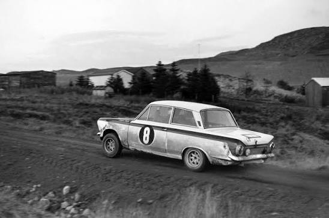
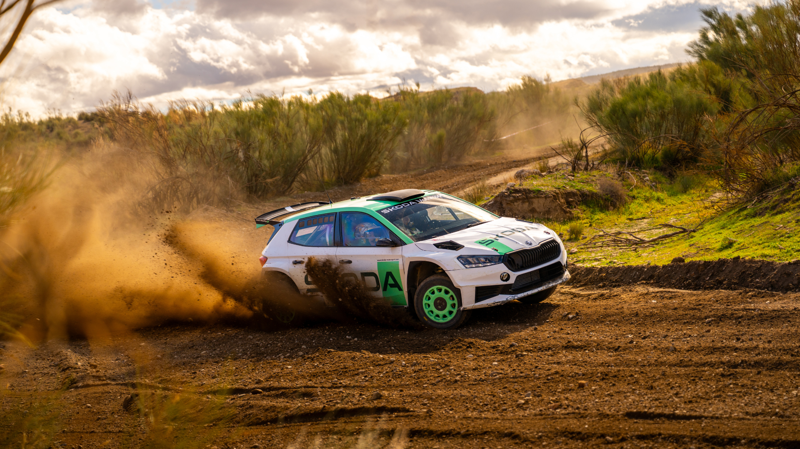
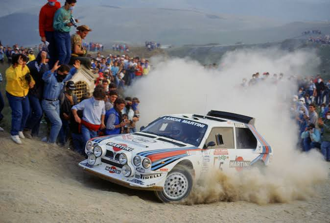
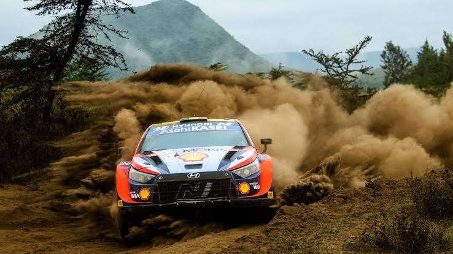

01.
1950s Roots
Originating from endurance road trials like Monte Carlo, early rally tested driver stamina and basic vehicle reliability across Europe.

70 Years of Speed, Dirt & Endurance
Rally racing represents the ultimate test of human driving skill, mechanical durability, and total unpredictability. Unlike circuit racing, stage rallying pits driver and co-driver against real-world roads across snow, gravel, asphalt, and mud.

Originating from endurance road trials like Monte Carlo, early rally tested driver stamina and basic vehicle reliability across Europe.

The 1980s saw 500+ horsepower monsters with lightweight Kevlar bodies and turbochargers, creating the most wild era in motorsport.

Today's Rally1 cars pair 1.6L turbocharged engines with 100kW electric motors to yield over 500hp while burning 100% sustainable fuel.

| Era Name | Active Years | Avg. Horsepower | Key Technical Feature | Iconic Vehicle |
|---|---|---|---|---|
| Early Endurance Era | 1953 – 1981 | 100 – 240 HP | Rear-wheel drive, basic roll cages | Lancia Stratos HF / Mini Cooper S |
| Group B Era | 1982 – 1986 | 450 – 550+ HP | All-Wheel Drive (Quattro), Spaceframes | Audi Sport Quattro S1 / Peugeot 205 T16 |
| Group A Era | 1987 – 1996 | 290 – 320 HP | Strict production-based homologation | Lancia Delta Integrale / Subaru Impreza |
| World Rally Car (WRC) | 1997 – 2021 | 300 – 380 HP | Active differentials, advanced aerodynamics | Citroën C4 WRC / Ford Focus RS WRC |
| Rally1 Hybrid Era | 2022 – Present | 500+ HP (Boost) | 100kW Plug-in Electric Hybrid + Fossil-free Fuel | Toyota GR Yaris Rally1 / Hyundai i20 N |